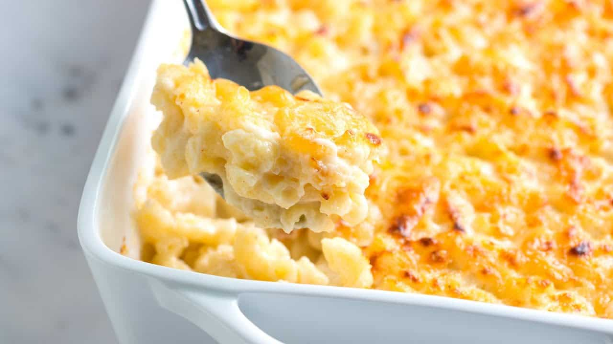

Lets Get to Cooking!
This Mac and Cheese Recipe is creamy, cheesy and delicious. The ultimate in comfort food, this pasta dish is made with a gooey homemade sauce of butter, milk, cream and melted cheese. Baked in the oven for an amazing texture.
Ingredients
- 1lb/453g Macaroni
- 1/2 cup unsalted butter
- 1/2 cup all-purpose flour
- 2.5 cups whole milk
- 1 cup heavy cream
- Salt and pepper to taste
- Small pinch of nutmeg
- 2.5 cup grated sharp cheddar
Instructions
Method:
- Bring a pot of salted water to a boil.
- Add macaroni and boil for up to 1 minute under the packaged instructions (8-9 minutes).
- In a large bowl, mix together the grated cheeses.
- In a large pot, add unsalted butter and heat over medium heat until melted. Once melted, whisk in all-purpose flour and cook for 1 minute while stirring often. Gradually stream in whole milk and heavy cream while whisking.
- Once thickened, add in the mixed grated cheeses (1.5 cups at a time) and whisk until melted and combined. Season to taste with salt and an optional pinch of grated nutmeg.
- Drain macaroni and pour into the cheese sauce and fold together. Coat thoroughly.
- In a lightly greased 9x13 baking dish, add in half of the cheesy macaroni followed by the remaining grated cheese and the other half of macaroni.
- Optionally toss the remaining grated cheese with chopped thyme and add to the top layer of the macaroni.
- Bake at 350F(176°C) for 20-25 minutes. Blast it under the broiler until just browned on top.
Return to top
Return to main